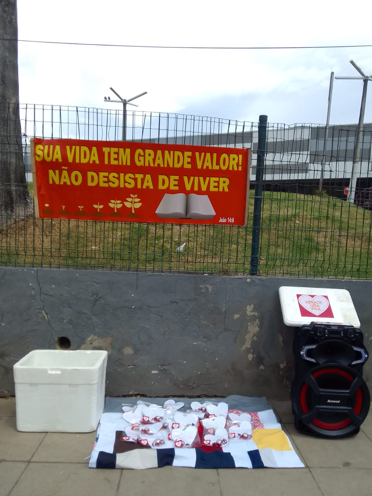

Um gesto que abre espaço para a conversa
Kits de acolhimento
Distribuídos gratuitamente, os kits são uma forma respeitosa de se aproximar, construir confiança e iniciar conversas sobre emoções e bem-estar.
- Uma garrafa com água gelada
- Um coração de papel feito à mão
- Um bombom